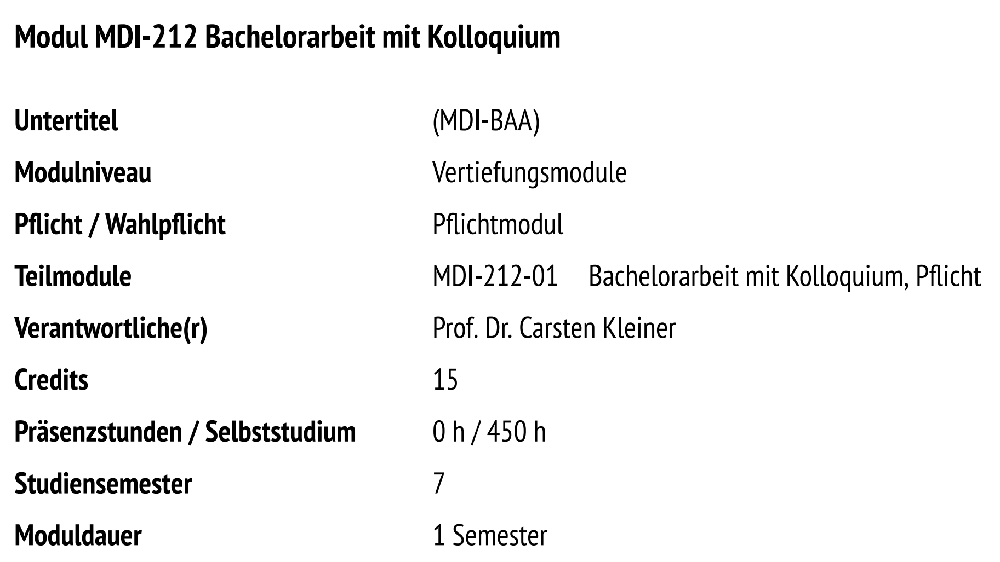
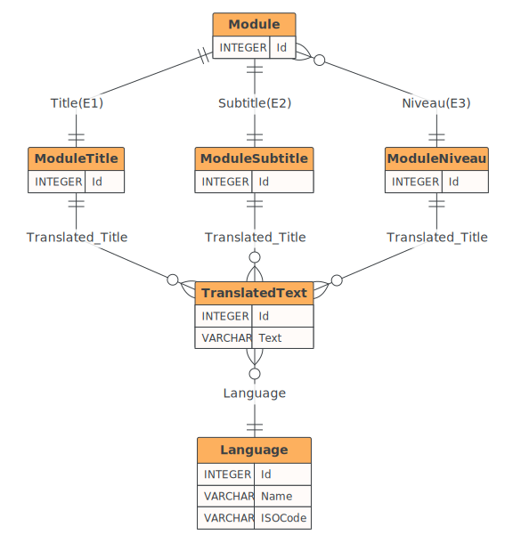
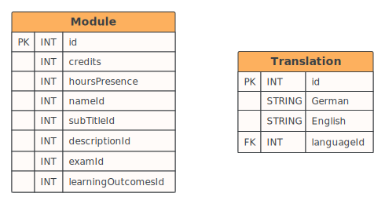
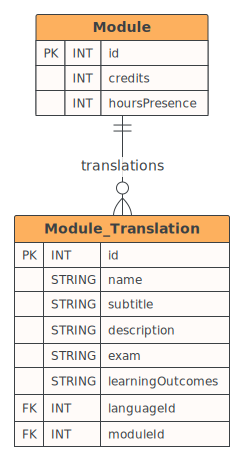

pie title Anforderungen
"Erfüllt" : 43
"Vermutlich erfüllt" : 3
"Vorbereitet" : 8
"Nicht erfüllt" : 10
Bachelor Kolloquium
Konzeption und Entwicklung eines Systems zur Verwaltung und Erstellung von Modulhandbüchern
26. August 2024
Modulhandbücher
- Was sind Modulhandbücher?
- Warum sind sie wichtig?
- Wie werden sie erstellt?
Was sind Modulhandbücher?
Modulhandbücher
Studiengänge sind in Module unterteilt.
Jedes Modul hat eine Beschreibung.

Bisheriger Prozess
Modulhandbücher
- Modulhandbücher werden in Word erstellt
1. Verbesserung
- Modulhandbücher wurden in Datenbank überführt
- Aus Datenbank wurden PDFs generiert
Probleme
Modulhandbücher
Direkter Zugriff auf Datenbank bringt Probleme mit sich:
- Software notwendig
- Keine Versionierung
- Wenig Validierung
- Datenbank selbst enthält noch Redundanzen
- -> Neues System notwendig
✅ Modulhandbücher
✅ Bisheriger Prozess & dessen Probleme
🔜 Neues System
Zielgruppe
Wer wird das neue System nutzen?
Welche Anforderungen gibt es?
Interessierte & Studierende
Zielgruppe
Welche Inhalte bietet das Studium?
Welche Wahlpflichtmodule gibt es?
Welche Voraussetzungen gibt es für Modul X?
Zielgruppe
Dozierende
Aktualisieren von Modulbeschreibungen
Studiendekan
Veröffentlichung von Modulhandbüchern
Technische Anforderungen
Anforderungen
- Angular Frontend
- NestJS Backend
- Prisma ORM
Entwurf
- Wie muss die Datenbank strukturiert sein?
- Wie wird das Frontend aussehen?
ER-Diagramm
Entwurf
ER-Diagramm Auszug
Entwurf
Frontend - Startseite
Entwurf

Frontend - Modulansicht
Entwurf

Frontend - Modulbearbeitung
Entwurf

Recap
✅ Use Cases / Anforderungen
✅ Entwurf der Datenbank
✅ Entwurf des Frontends
🔜 Implementierung
Implementierung
- Designentscheidungen
- Herausforderungen
Backend - Datenbank
Implementierung
Backend - Datenbank
Implementierung
Backend - Datenbank
Implementierung
Backend - API
Backend - API
Backend - API
@ApiTags('Degrees')
@Controller('degrees')
export class DegreeController {
constructor(
private degreeService: DegreeService
) {}
@Get(':id')
findOne(@Param('id') id: string, @Req() request: Request): Promise<any> {
const language = (request.headers as any)['language'];
return this.degreeService.findById(+id, language);
}
}UI-Framework
Implementierung
Bootstrap vs. PrimeNG
| Bootstrap | PrimeNG | |
|---|---|---|
| Weekly Downloads | 424,283 | 355,443 |
| … | … | … |
| Anzahl Komponenten | ~25 | ~100 |
Übersetzbarkeit
Implementierung
- Angular i18n
- Einrichtung ist aufwändig
- Keine zentrale Übersetzungsdatei
- Transloco
- Einfache Einrichtung
- Zentrale Übersetzungsdatei
Übersetzbarkeit - Beispiel
HTML-Template:
Übersetzbarkeit - Beispiel
HTML-Template:
Dynamische Übersetzungen
Implementierung
Dynamische Übersetzungen
Implementierung
export class LanguageInterceptor implements HttpInterceptor {
private language: string;
constructor(private languageService: LanguageService) {
this.language = this.languageService.languageCode;
this.languageService.languageSubject.subscribe((language) => {
this.language = language;
});
}
intercept(req: HttpRequest<any>, next: HttpHandler): Observable<HttpEvent<any>> {
if (req.headers.has('language')) {
return next.handle(req);
}
if (this.language) {
const newRequest = req.clone({
setHeaders: {
'language': this.language.toUpperCase()
}
});
return next.handle(newRequest);
}
return next.handle(req);
}
}Modulbearbeitung
✅ Übersetzbarkeit
✅ Datenbank/API mit benötigten Tabellen
🔜 Wie werden die Daten erstellt / bearbeitet?
Modulbearbeitung - Komponenten
Implementierung
Modulbearbeitung - Komponenten
Implementierung
PDF-Generierung
Implementierung
Architektur Übersicht
Implementierung
Podman Image
Implementierung
FROM node:alpine as build
WORKDIR /project
RUN npm install -g @angular/cli
# only copy the package.json and package-lock.json to install dependencies (Efficient Layer Caching)
COPY package*.json ./
RUN npm ci
# copy the rest of the files
COPY . .
RUN npm run build
FROM nginx:alpine
COPY --from=build /project/dist/study-modules/browser /usr/share/nginx/html
EXPOSE 80
CMD ["nginx", "-g", "daemon off;"]Podman Compose
name: studymodules_project
services:
frontend:
image: localhost/studymodules-frontend
backend:
image: localhost/studybase-backend
ports:
- "3000:3000"
volumes:
- C:\Users\tobi\studybase\docker-volume:/app/docker-volume
documentation:
image: localhost/studymodules-documentation
ports:
- "8080:80"
- "443:443"
latex-api:
image: localhost/latex-api:latest
ports:
- "2345:8080"
build: .
command: make start
environment:
# SENTRY_DSN:
CACHE_HOST: cache
depends_on:
- backend
latex-poll-script:
image: localhost/studymodules-latex:latest
volumes:
caddy_data:
caddy_config:Podman
Implementierung
Dokumentation
Implementierung
Markdown
- Anzeige direkt auf GitLab
- Bearbeitung mit jedem Texteditor möglich
- Einfache Strukturierung
Dokumentation
Implementierung
Dokumentation - Suche
Implementierung
Recap
✅ Frontend
✅ Backend
✅ Dokumentation
✅ Podman-Container
🔜 Was fehlt noch?
Fazit
Fazit
Anforderungen
Fazit
Studierende
✅ Angebotene Module können eingesehen werden
✅ Modulhandbücher können heruntergeladen werden
Dozierende
✅ Modulhandbücher können erstellt und bearbeitet werden
Ausblick
Offene ToDos
Ausblick
- Umsetzung der verbleibenden Anforderungen
- Verbesserung der Codequalität / der Dokumentation
- Tests
Veröffentlichung
Ausblick
- Veröffentlichung der Software auf Hochschulserver
- Dozierende überprüfen die generierte PDF-Datei
- Link zum System wird auf der Website der HSH eingebunden
In Zukunft
Ausblick
- Anbindung an den Stunden-/ Prüfungs-/ Raumplan
- Anbindung weiterer Studiengänge
- System als Vorlage für andere Projekte
Vielen Dank!
Übersetzungsentscheidung Idee 1
Übersetzungsentscheidung Idee 2
Übersetzungsentscheidung Idee 3
Umsortieren der Translations
module-preview.component.ts
Update-Endpoint
async update(moduleDto: ModuleDto) {
const {
id,
responsibleId,
responsible,
requirementsHardId,
requirementsSoftId,
requirementsHard: requirementsHardNew,
requirementsSoft: requirementsSoftNew,
degreeProgramId,
groupId,
group,
translations,
subModules,
...moduleData
} = moduleDto;
await this.prisma.$transaction(async (prisma) => {
await prisma.module.update({
where: { id },
data: moduleData
});
await this.updateRequirements(prisma, moduleDto);
await this.upsertModuleTranslations(prisma, moduleDto);
await this.connectResponsible(prisma, moduleDto);
await this.connectSubModules(prisma, moduleDto);
await this.connectGroup(prisma, moduleDto);
});
}
async connectResponsible(prisma: any, moduleDto: ModuleDto) {
const { responsibleId, id } = moduleDto;
if (!responsibleId) return;
await prisma.module.update({
where: { id },
data: {
responsible: responsibleId ? {
connect: { id: responsibleId }
} : undefined
}
});
}Vergleichsmethoden für Changelog
const compareTranslations = (unchangedObject: any, newObject: any, baseFieldName: string) => {
unchangedObject.translations.forEach((oldTranslationObject: any, index: any) => {
const newTranslationObject = newObject.translations.find((newTranslation: any) => newTranslation.languageId === oldTranslationObject.languageId);
const languageAbbreviation = languages.find(l => l.id === oldTranslationObject.languageId)?.abbreviation;
if (newTranslationObject && languageAbbreviation) {
compareTranslationFields(oldTranslationObject, newTranslationObject, baseFieldName, languageAbbreviation);
}
});
};
...
const compareArrayField = (unchangedObject: any, newObject: any, baseFieldName: string, field: string) => {
const unchangedObjectIds = unchangedObject[field].map((obj: any) => obj.id);
const newObjectIds = newObject[field].map((obj: any) => obj.id);
// Check if the arrays contain the same elements, ignore the order
if (JSON.stringify(unchangedObjectIds.sort()) !== JSON.stringify(newObjectIds.sort())) {
changes.push({
field: `${baseFieldName}.${String(field)}`,
oldValue: unchangedObjectIds,
newValue: newObjectIds
});
}
};
const comparePrimitiveField = (unchangedObject: any, newObject: any, baseFieldName: string, field: string) => {
if (unchangedObject[field] !== newObject[field]) {
changes.push({
field: `${baseFieldName}.${String(field)}`,
oldValue: unchangedObject[field],
newValue: newObject[field]
});
}
};Messung der Codequalität
- Richtwert: Cycolmatic Complexity <= 10
UserService ist in Frontend und Backend
- Seperation of Concerns
- Entkopplung
Tobias Wylega
Bachelor Kolloquium